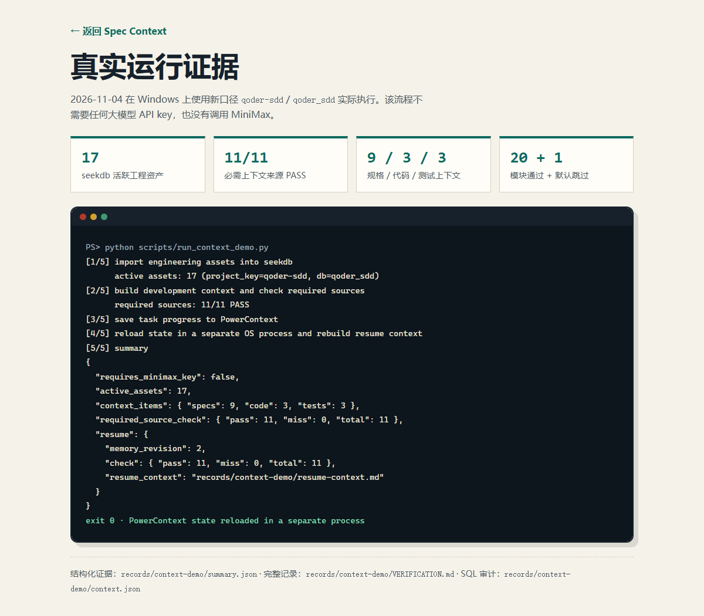

17 个活跃资产 · 服务健康
assets=17
sddctx import 在初始快照报告 17 个活跃资产；sddctx doctor 确认 seekdb 与 PowerContext 均可达。
records/doctor-report.txt · docs/RUNBOOK.md §6
2026 OceanBase 大赛提交 · Qoder 赛道 · 基线 oceanbase/powercontext@d647275c
为了完成这个开发任务，AI 编码助手应该看到哪些有效的规格、源码符号、测试，以及此前已完成的工作？
—sddctx回答的就是这个具体问题
sddctx 时sddctx 的答卷MATCH … AGAINST 的返回行决定，不硬编码答案来源。u_年、b_年份），配合 WITH PARSER SPACE 原生全文索引。sddctx resume 重新加载并重建上下文。records/。README.md 架构图与 src/sddctx/ 实际实现绘制；所有箭头均有对应代码路径。| 技术 | 实际角色 | 入口代码 |
|---|---|---|
| seekdb 1.4 MySQL 协议 |
存放全部规格、源码与测试资产；任务上下文完全由 MATCH … AGAINST 返回行产生；资产内容变化时 version 自增。 |
src/sddctx/seekdb_store.py |
| PowerContext 1.2.0 | 以 scope Memory 保存任务目标、完成/待办事项、MiniMax 运行元数据与验证摘要；新进程可重新加载并重建上下文。 | src/sddctx/state.py |
| MiniMax M3.1 Flash | 接收选定的上下文，返回完整替换源文件；生成文件只写入 sample-project/src/，改测试会被直接拒绝。 |
src/sddctx/agent.py |
任务与资产先做确定性归一化：英文标识符小写并按 _/驼峰拆分；中文被表示为单字与相邻双字元。每个种类各执行一次 seekdb 原生全文查询，按数据库返回的 score 排序，仅对任务标识符出现在正文者加很小的奖励分。真实分析查询与耗时记录在
records/db-query-log.md 与 records/context-task-001.json 的 query_trace 中。
u_增 b_增加 u_年 b_年份 u_下 b_下限 u_筛 b_筛选 u_按 b_包含 u_边 b_边界 u_保 b_保持 u_关 b_关键 u_标 b_标签 u_归 b_归档 u_排 b_排序 u_不 b_不变 …
以下每个数字都能在本仓库的文件中逐条核对；未发生的（如改后的完整日志）放在“局限”里说明，不冒充结果。
assets=17
sddctx import 在初始快照报告 17 个活跃资产；sddctx doctor 确认 seekdb 与 PowerContext 均可达。
records/doctor-report.txt · docs/RUNBOOK.md §6
PASS ×11
context --check examples/catalog-year-filter/task.json 对 7 条规格、2 个代码文件、2 个测试文件逐条比对，全部命中——没有一行是写死的。
records/context-task-001.check.md
9 + 3 + 3 行
同一条分析查询分别执行于 spec_entry（9 行 / 7.181 ms）、code（3 行 / 3.535 ms）、test（3 行 / 23.945 ms），SQL 原文为 MATCH(searchable_text) AGAINST(?)。
records/context-task-001.json · query_trace
revision 1 → 7
PowerContext 日志记录了 scope 创建/复用、Memory 写入与搜索；sddctx resume 在新操作系统进程里按 updated_at 取回状态，并重建出 records/resume-context.md（含 SPEC-002-2 v3）。
records/powercontext-log.md · records/resume-context.md
3过4败 / 5过
结构化记录：target 套件 exit=1, passed=3, failed=4 且被“预期失败”接受；regression 套件 exit=0, passed=5。均附命令、工作目录、代码树哈希 tree:509180b3…。
records/verify/before-*-20261104T*.json
v2 · 标记命中
scripts/spec_update_demo.py 临时给 SPEC-002-2 加入唯一标记“续演验证标记-2026”，重新导入后上下文取回 entry_version: 2 的新内容，随后恢复原规格——证明输出跟随数据库当前内容。
records/spec-update-demo/result.json
exit 0 · qoder-sdd
编码修复后在 Windows 实跑 scripts/run_context_demo.py：17 个活跃资产（qoder_sdd 库），上下文 specs/code/tests = 9/3/3，必需来源 11/11 PASS；PowerContext 写入后 memory revision=2，--resume-only 子进程在独立 OS 进程中重建 resume-context.md。全程未使用任何模型 key。与上方历史卡片分属两次运行：新运行是 context-only 路径，不含 MiniMax 改码。
records/context-demo/ · VERIFICATION.md · summary.json
20+1 · 1 · PASS
模块测试 20 passed, 1 skipped（skip 为默认关闭的集成用例）；SDDCTX_RUN_INTEGRATION=1 集成测试 1 passed；sddctx doctor 通过 seekdb qoder_sdd, assets=17 与 PowerContext saved_task=True。
records/context-demo/VERIFICATION.md · tests/

以 examples/catalog-year-filter/task.json 为准：给 Catalog.search 增加 min_year 年份下限筛选。下方数据全部取自仓库记录与真实测试断言。
“为 Catalog.search 增加 min_year 年份下限筛选：按 Book.published_year 包含边界，并保持关键词、标签、归档选项与既有排序行为不变。”
catalog.py、models.py）初版 catalog.py 接受 min_year 参数但故意不实现筛选——制造的是行为断言失败，而非导入或服务故障。
三类资产各执行一次 seekdb 原生查询（同一分析查询，SQL 见 db-query-log.md）：
SELECT …, MATCH(searchable_text) AGAINST(?) AS score
FROM engineering_assets
WHERE project_key=? AND kind IN (?)
AND MATCH(searchable_text) AGAINST(?)
ORDER BY score DESC, path, asset_id LIMIT ?数据库返回行按 score 排序后即为上下文（节选自 records/context-task-001.json）：
SPEC-002-2 显示 v3——它是规格更新演示留下的真实版本痕迹。
sddctx context --check examples/catalog-year-filter/task.json 的真实输出（records/context-task-001.check.md）：
- PASS 规格: specs/SPEC-002-书目录查询.md#SPEC-002-1
- PASS 规格: specs/SPEC-002-书目录查询.md#SPEC-002-2
- PASS 规格: specs/SPEC-002-书目录查询.md#SPEC-002-3
- PASS 规格: specs/SPEC-002-书目录查询.md#SPEC-002-4
- PASS 规格: specs/SPEC-002-书目录查询.md#SPEC-002-5
- PASS 规格: specs/SPEC-001-工程约束.md#SPEC-001-2
- PASS 规格: specs/SPEC-001-工程约束.md#SPEC-001-4
- PASS 代码: sample-project/src/bookdesk/catalog.py
- PASS 代码: sample-project/src/bookdesk/models.py
- PASS 测试: sample-project/tests/test_catalog_year_filter.py
- PASS 测试: sample-project/tests/test_catalog_regression.pymin_year 被忽略）六本书来自真实 fixture（sample-project/tests/conftest.py，2017–2023、含归档与共享评分）；排序规则为评分降序 → 年份降序 → book_id 升序（SPEC-001-4）。
前置：Python ≥ 3.11、uv、可达的 seekdb（127.0.0.1:2881）、PowerContext Server 1.2.0、.env 配置。Windows 将 .venv/bin/… 换成 .venv\Scripts\…。
uv venv .venv --python 3.12
uv pip install --python .venv/bin/python -e ".[dev]"
.venv/bin/sddctx doctor.venv/bin/sddctx import
.venv/bin/sddctx context \
--out records/context-task-001.md \
--check examples/catalog-year-filter/task.json.venv/bin/python scripts/run_context_demo.py导入 → 构建并校验上下文 → 保存任务进度 → 新进程 resume 重建；证据已在 records/context-demo/ 生成（2026-11-04 Windows 实跑成功，见 VERIFICATION.md）。
.venv/bin/python scripts/run_demo.py导入 → 构建并校验上下文 → 记录改前失败 → 写任务状态 → MiniMax 改码 → 复测 → resume 重建。
sddctx verify --phase before --suite target --expect fail
sddctx verify --phase before --suite regression --expect pass
sddctx verify --phase after --suite target --expect pass
sddctx verify --phase after --suite regression --expect pass
sddctx verify --phase after --suite all --expect passsddctx status \
--objective "为 Catalog.search 增加 min_year 年份下限筛选" \
--complete "导入规格、代码和测试资料" \
--pending "使用 MiniMax 修改代码"
sddctx resumegit checkout -- qoder/sample-project
sddctx reset --yes
sddctx import
python scripts/run_demo.py
PYTHONPATH=src .venv/bin/python -m pytest tests期望结果（VALIDATION.md 口径）：改前 target 4 failed, 3 passed（预期失败被接受）、regression 5 passed；改后 target 7 passed、regression 5 passed、全量 12 passed。
本提交目录（qoder/）的站点与后续继续工作由 Qoder CLI 完成：先逐份读取 README.md、docs/、records/ 与 src/sddctx/ 取证生成 site/ 静态站；继续会话中新增离线演示 scripts/run_context_demo.py、src/sddctx/context_demo.py 与 tests/test_context_demo.py，并把默认命名从旧 MiniMax 赛道口径切换为 qoder-sdd / qoder_sdd（历史证据不复写）。Windows 真实运行暴露步骤 4 子进程编码问题（传统代码页导致中文 JSON 解码失败），修复为 -X utf8 -B 启动子进程并显式按 UTF-8 解码后复跑成功：exit 0、11/11 PASS、独立进程重建 resume 上下文，模块测试 20 passed + 1 skipped、集成测试 1 passed，记录见 records/context-demo/VERIFICATION.md。开发会话记录见 records/qoder/README.md。站点为纯 HTML/CSS/JS，无外部请求、无字体下载、无统计脚本。
site/ 是自包含静态目录，可直接交给 Qoder Sites 托管：尚未发布；上传后将获得一个 .qoder.site 访问地址用于展示与预览，无需任何服务端组件。页面内所有事实均可回到仓库文件核对，因此线上站点与仓库内容保持一致。
sample-project/src/，对测试文件的修改会被拒绝。MATCH … AGAINST 依赖 seekdb/OceanBase 对 FULLTEXT 索引的支持。records/verify/ 两份 before 结果，project key 为当时的 minimax-sdd、库名 minimax_sdd）；以及新的离线运行（records/context-demo/，口径 qoder-sdd / qoder_sdd）。历史 JSON/log 文件未被改写；离线运行不含 MiniMax 改码步骤。records/verify/ 结构化结果目前只有改前两份（target、regression）；改后 7/5/12 passed 是 docs/VALIDATION.md 中的预期口径，完整跑需 MiniMax API key。离线演示的成功复跑（2026-11-04）验证的是 context-only 路径，不改变这一口径。records/minimax/ 当前保留的是选定上下文（catalog-year-filter-20261104T061318Z/）；完整的请求/响应/快照/diff 目录由带 key 的 sddctx dev 运行时生成。提交仓库：THUNDERX004/powercontext · 分支 codex/qoder-contextpack · 基线 oceanbase/powercontext 提交 d647275c308e09b7b623f322a26f5c4e85734fb0
github.com/THUNDERX004/powercontext/tree/codex/qoder-contextpack
证据索引见仓库 records/README.md；Qoder 会话记录 records/qoder/README.md；运行手册 docs/RUNBOOK.md；验证口径 docs/VALIDATION.md。